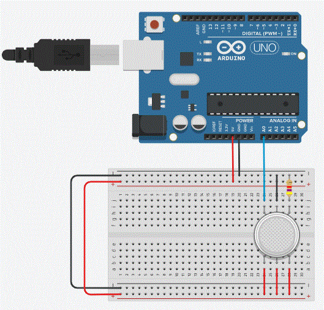
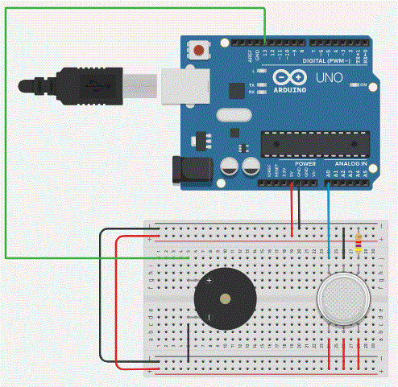
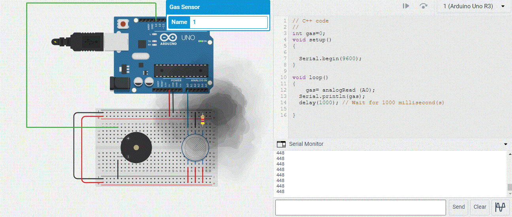
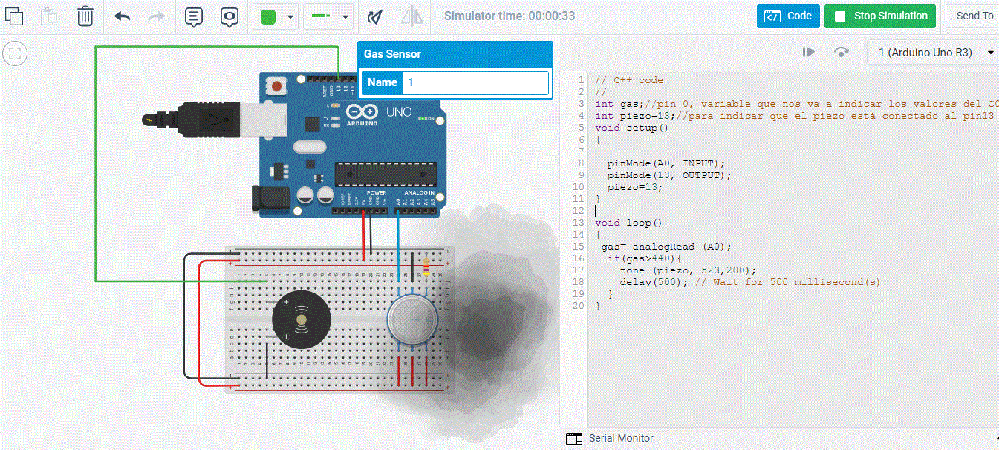

Componentes
Tendrás que usar los siguientes componentes:
Conexiones
Las conexiones que realizaremos serán las siguientes:
-
alimentaremos el protoboard con la salida de 5 voltios de Arduino (usar cable rojo y pinchar en línea roja paralela de la protoboard (marcada con " - ")
-
cogeremos un cable negro para la conexión de tierra GND (pinchar en la línea negra, marcada con " - ")
-
haremos un puente con la línea de voltaje y de tierra para alimentar el protoboard por la otra parte (por las otras líneas paralelas roja y negra de la protoboard)
-
Pinchamos el sensor de gas de manera que tres de sus conexiones estén en una parte de la protoboard y las otras tres en la otra parte de la placa
-
tres de las conexiones del sensor irán directamente a voltaje (pinchadas para que conecten con voltaje)
-
las otras tres conexiones del sensor, las conectaremos de la siguiente manera:
-
una de ellas irá hacia tierra pero pasando por la resistencia, es decir conectaremos por medio una resistencia
-
la otra irá directamente a tierra (cable negro)
-
y por último realizaremos la conexión de la tercera patilla del sensor a la entrada analógica de Arduino . En este caso vamos a usar la entrada A0 (Analógica 0) (vamos a usar un cable azul)
Cómo vamos
El estado de nuestro montaje tiene que tener esta pinta:

¿Seguimos?
Ahora vamos a conectar nuestro piezo o zumbador. Lo vamos a girar para poder conectarlo con mayor facilidad:
- un extremo tiene que ir conectado a tierra
- y el otro lo tenemos que conectar a una salida de la placa, que es una salida digital. Vamos a usar en este caso el pin número 13
Con esto ya se habría terminado todo lo concerniente a las conexiones. Nos quedaría algo de este tipo:
Ahora codificamos
Ahora, toca hacer la parte de programación.
El lenguaje del Arduino está basado en el lenguaje C. Es una versión reducida y mucho más sencilla de manejar que el lenguaje C. El objetivo de este lenguaje es que puedas programar de una manera intuitiva concentrándote en lo que quieres hacer más que en la manera de hacerlo.
Por ahora vamos a ver el código que se usaría en esta práctica.
Vamos a hacer el código en dos partes:
-
La primera parte nos va a indicar a partir de qué concentración de gas va a sonar el zumbador. Para ello veremos los valores que nos da el "monitor en serie"
-
con la segunda parte y sabiendo que niveles son los que soporta el sensor, terminaremos de hacer el programa.
Primera Parte.
Código para detectar el nivel de CO2 haciendo uso del monitor en serie.
El monitor en serie (monitor serial) es muy útil en este tipo de prototipos ya que nos permite ejecutar y ver los resultados. Según los valores que muestre el monitor en serie, así es como estableceremos las condiciones estructuras y para encender o apagar el zumbador en la segunda parte del programa.
Escribid el siguiente código:
// C++ code
//
int gas=0;
void setup()
{
Serial.begin(9600);
}
void loop()
{
gas= analogRead (A0);
Serial.println(gas);
delay(1000); // Wait for 1000 millisecond(s)
}
¿Tenéis algo así?
Si picamos en el simulador veréis que se ve algo así

Si además, acercamos la nube al sensor, veréis que empieza el zumbador a funcionar y podemos ver los valores de CO2 a partir del cual empiezan los zumbidos.
Como veis, unas valores mayores de 440, son suficiente para que se nos avise de la concentración de CO2.
¿Lo estás viendo?, ¡¡¡pues seguimos máquina!!!
Terminamos ya
Ahora vamos a completar el programa para que quien nos avise de la concentración, sea el zumbador:
- Declaramos otra variable, que la vamos a llamar piezo y la iniciamos a 13 que es el pin en el que lo hemos conectado la salida del zumbador
- En el módulo setup indicamos que el pin A0 es de entrada y que el 13 es de Salida. Asignamos el valor del pin 13 a nuestra variable piezo
- En el módulo loop, controlamos el valor de la variable gas para activar el zumbador. Antes indicamos que la variable gas contiene la lectura analógica del pin A0 (gas= analogRead (A0).
El programa quedaría de esta manera:
// C++ code
//
int gas;//pin 0, variable que nos va a indicar los valores del C02
int piezo=13;//para indicar que el piezo está conectado al pin13
void setup()
{
pinMode(A0, INPUT);
pinMode(13, OUTPUT);
piezo=13;
}
void loop()
{
gas= analogRead (A0);
if(gas>440){
tone (piezo, 523,200);
delay(500); // Wait for 500 millisecond(s)
}
}
Si ya lo has hecho todo, pasa a la siguiente pestaña que te muestro el resultado final
Proyecto Terminado
